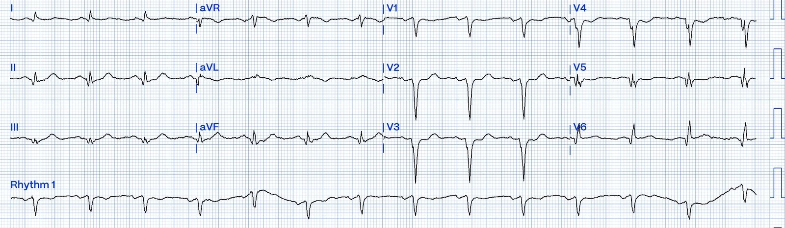
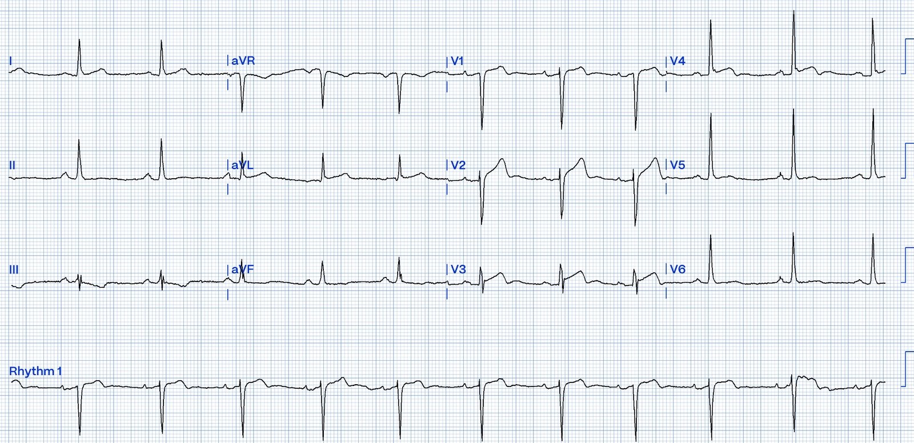
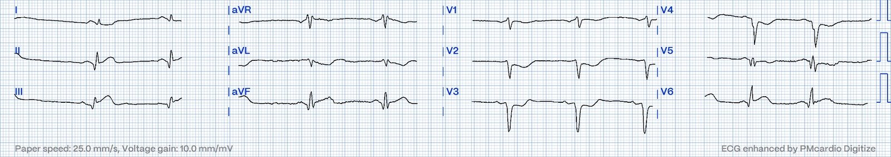
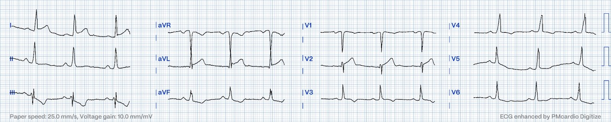
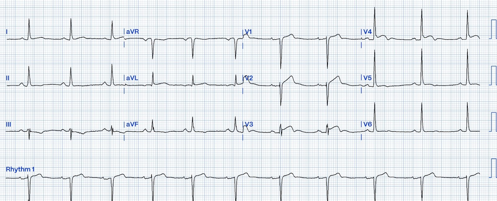
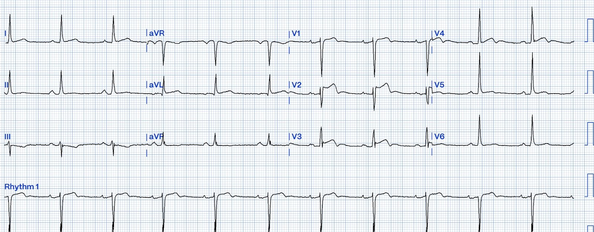
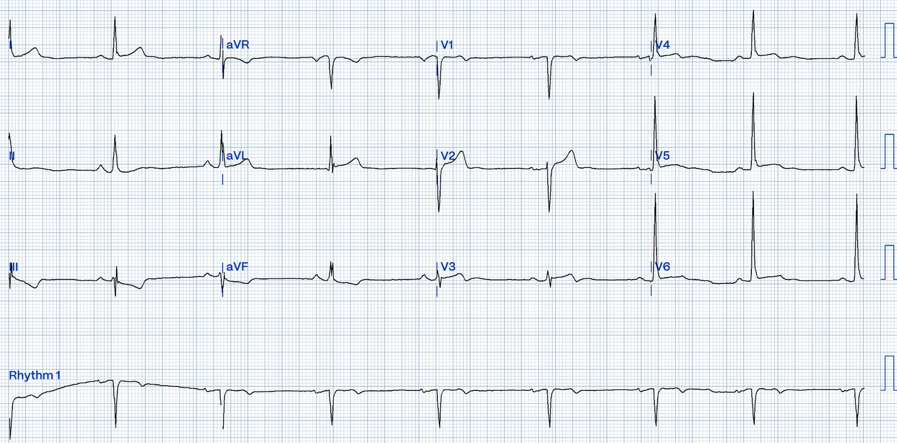
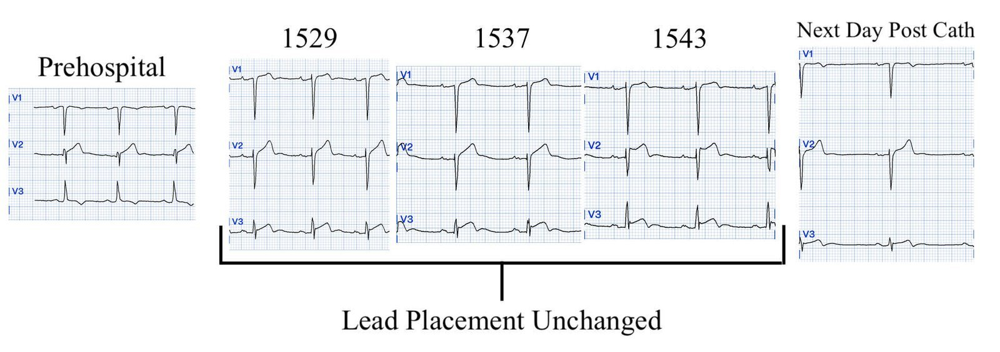
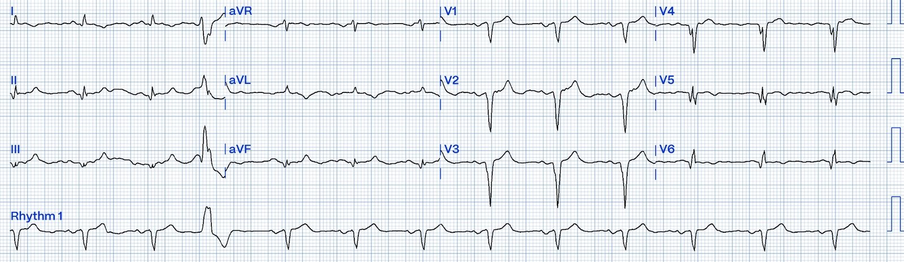
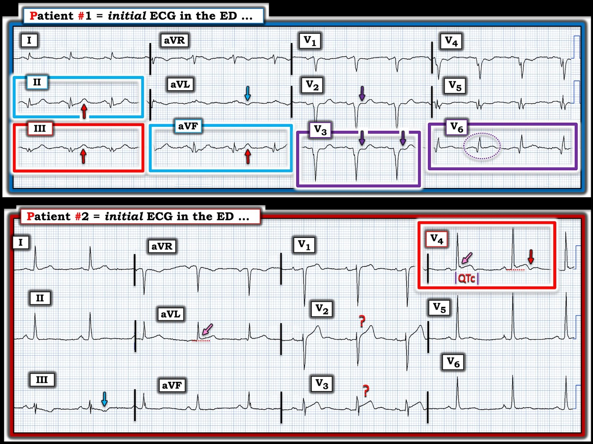

15/10/2024 — Phòng thông tim đang bận. Bệnh nhân nào nên được đưa vào ngay (hay chỉ một người cần? Hay không ai cả?)
Bản dịch tiếng Việt của bài "Cath Lab occupied. Which patient should go now (or does only one need it? Or neither?)" – Dr. Smith’s ECG Blog. Giữ nguyên toàn bộ 11 hình ảnh của bản gốc.
Bài này do Hans Helseth, một sinh viên đại học, gửi cho tôi; anh là kỹ thuật viên điện tâm đồ nhưng lại là một chuyên gia đọc điện tâm đồ OMI. Anh viết phần lớn nội dung và tôi (Smith) biên tập.
Một ca kích hoạt “STEMI” trước viện được báo cho một bệnh nhân nam 75 tuổi (Bệnh nhân 1)
có tiền sử rối loạn lipid máu và OMI vùng LAD và Cx đã được đặt
stent. Ông đến khoa cấp cứu (ED) bằng trực thăng lúc 1507, khoảng ba giờ
sau khi bắt đầu đau ngực trong lúc đang chẻ củi vào khoảng giữa trưa.
Trong khi
đang ghi điện tâm đồ và lấy xét nghiệm cho Bệnh nhân 1, một thông báo thứ hai
được phát ra về một ca kích hoạt “STEMI” trước viện khác ở một bệnh nhân nam 58
tuổi (Bệnh nhân 2)
có tiền sử lạm dụng chất. Ông đến khoa cấp cứu bằng
xe cứu thương lúc 1529, chỉ nửa giờ sau khi bắt đầu đau ngực
vào khoảng 1500 trong lúc đang ăn.
Phòng thông tim (cath lab) của bệnh viện đang có một ca can thiệp, và chỉ còn chỗ cho thêm một bệnh nhân.
Điện tâm đồ được ghi ngay tại khoa cấp cứu cho từng bệnh nhân:
Bệnh nhân 1:


Bạn nghĩ gì?
Bệnh nhân 2, điện tâm đồ 1:


Bạn nghĩ gì?
Điện tâm đồ của Bệnh nhân 1
được ghi trước nên được đọc trước. Điện tâm đồ này
chẩn đoán OMI cấp vùng dưới, sau và bên chồng lên trên
hình thái “phình thất trái”. Tuy hơi khó phân biệt, các
sóng T vùng dưới là sóng T tối cấp, đặc biệt khi đặt trong bối cảnh
phần còn lại của bản ghi; có sóng T đảo ngược ở aVL, ST chênh xuống
dốc xuống với phần cuối sóng T dương ở V2-V4 cho thấy OMI
thành sau cấp, và ST chênh lên kèm ST thẳng đuỗn ở V6.
Có một điện tâm đồ trước viện của bệnh nhân 1, được ghi trên trực thăng:


OK. Điện tâm đồ này rõ ràng.
Các
dấu hiệu trên điện tâm đồ trước viện này rõ rệt hơn so với
điện tâm đồ ghi lúc đến khoa cấp cứu, gợi ý rằng động mạch của bệnh nhân
đã mở ra. Đúng như dự đoán, bệnh nhân cho biết đã hết đau hoàn toàn
vào lúc đến khoa cấp cứu. Ngoài ra, máy theo dõi điện tim từ xa (telemetry)
ghi nhận các loạt nhịp tự thất gia tốc (AIVR), một rối loạn nhịp
lành tính thường đi kèm với tái tưới máu mạch vành.
Bệnh nhân 2
được cùng bác sĩ tim mạch đó khám ngay sau bệnh nhân 1. Điện tâm đồ của ông
cho thấy một biến thể của một hình ảnh đặc trưng thường bị nhầm với OMI:
sóng T đảo ngược lành tính (Benign T wave inversion, BTWI). Hình ảnh này hay gặp nhất ở nam giới
da đen, và bệnh nhân 2 là một người nam da đen. Tuy bệnh nhân BTWI thường
có điện thế cao hơn, vẫn có vài đặc điểm điển hình của BTWI trên
điện tâm đồ này: có sóng J ở aVL, V3 và V4, sóng U nổi bật, và
QTc tương đối ngắn, 396 ms. Có thể thấy phần cuối sóng T ở
chuyển đạo V4 lõm xuống vừa chớm dưới đường đẳng điện rồi
quay lên trên đường đẳng điện và đi vào sóng U.
Cũng có một điện tâm đồ trước viện của Bệnh nhân 2:


Điện tâm đồ
này trông giống dấu hiệu Cờ Nam Phi (South Africa Flag Sign), cho thấy OMI vùng bên cao.
Cần xử trí như vậy trừ khi có thêm thông tin, chẳng hạn điện tâm đồ cũ hoặc
các điện tâm đồ liên tiếp có thể xác nhận một chẩn đoán lành tính, vì hình ảnh BTWI có thể bắt chước
dấu hiệu Cờ Nam Phi (hãy so sánh điện tâm đồ này với ca 4 ở đây: https://hqmeded-ecg.blogspot.com/2022/05/quiz-post-which-of-these-if-any-are-omi.html).
Cũng cần nhận biết rằng hình ảnh BTWI có thể
thay đổi rất động. Thêm hai điện tâm đồ nữa được ghi với vị trí điện cực y hệt trên bệnh nhân 2 chỉ cách nhau vài phút:
Bệnh nhân 2, điện tâm đồ 2 lúc 1537:


Thuật toán Marquette 12 SL đọc: ACUTE MI/STEMI (nhồi máu cơ tim cấp/STEMI)
Bệnh nhân 2, điện tâm đồ 3 lúc 1543:


Thuật toán Marquette 12 SL đọc: ACUTE MI/STEMI (nhồi máu cơ tim cấp/STEMI)
Người
xem xét các điện tâm đồ liên tiếp này có thể nhận thấy độ sâu sóng S ở V3 giảm dần
và lo ngại về biến dạng phần cuối QRS. Tuy nhiên, V3 có sóng J
ngày càng nổi rõ khi sóng S nhỏ dần. Điều này
không phù hợp với biến dạng phần cuối QRS (TQRSD), vốn không thể có sóng S hay sóng J ở V2
và/hoặc V3.
Dù vậy,
không thể bỏ qua những thay đổi lớn như thế. Hãy xem ca này, trong đó một
bệnh nhân có hình thái BTWI và thay đổi điện tâm đồ lớn trong vòng vài phút được
chẩn đoán viêm cơ tim: https://hqmeded-ecg.blogspot.com/2019/07/what-does-this-ecg-with-significant-st.html
Điện tâm đồ
3 còn có hình yên ngựa (saddleback) ở V2, điều chỉ hiếm khi do OMI.
V2 có một số đặc điểm của kiểu hình sao chép Brugada (Brugada phenocopy) típ 2. Góc của
sườn xuống của sóng T hình yên ngựa (góc beta) lớn hơn
35 độ, phù hợp với hình thái Brugada típ 2. Hình thái Brugada
thoáng qua đã được ghi nhận ở bệnh nhân bị sốt, dùng thuốc chẹn kênh
natri, hoặc tăng kali máu. Bệnh nhân này không có tình trạng
nào trong số đó.
Dù
các điện tâm đồ này cho thấy viêm cơ tim, một biến thể bình thường hay điều gì khác, nhìn
chung chúng không điển hình cho thiếu máu cục bộ xuyên thành của thành trước hay
thành bên cao. Ngoài ra, siêu âm tim tại giường không thấy
rối loạn vận động thành và chức năng thất trái bình thường.
Hai ca được cân nhắc như sau:
Bệnh nhân 1
được bác sĩ cấp cứu và bác sĩ tim mạch nhận định là
“STEMI” đã tự hồi phục. Ông được dùng heparin và quyết định được đưa ra là
hoãn thông tim đến sáng hôm sau.
Bệnh nhân 2
được bác sĩ tim mạch chẩn đoán “STEMI” cấp và được đưa
cấp cứu vào phòng thông tim. Chụp mạch vành cho thấy hẹp 30% không gây tắc nghẽn
ở đoạn giữa LAD. Các giá trị troponin T độ nhạy cao liên tiếp (URL 15
ng/L) đều âm tính và không thay đổi.
Bệnh nhân 1
nằm lại bệnh viện qua đêm. Ông có nhiều cơn
nhịp chậm và nhịp nhanh thất không bền bỉ (NSVT). Ông được đưa vào
phòng thông tim lúc 0900 sáng hôm sau. Có một tổn thương thủ phạm hẹp 70% ở
nhánh bờ tù thứ nhất trong hệ mạch vành ưu thế phải. Tổn thương này
được đặt stent. Troponin T độ nhạy cao của ông tăng từ 69 ng/L lúc đến khoa cấp cứu
lên 583 ng/L hai giờ sau đó, và đạt đỉnh 5.258 ng/L trong đêm.
Đây là một OMI lớn. Đây là một minh họa tốt cho thấy khi động mạch đã tái tưới máu, nó có nguy cơ cao bị tắc lại (trong ca này là tắc lại/tái tưới máu/tắc lại/tái tưới máu).
Siêu âm tim chính thức của bệnh nhân 2 cho thấy kích thước thất trái, bề dày thành và chức năng tâm thu toàn bộ bình thường. Ông được ghi thêm một điện tâm đồ vào sáng hôm sau:


Hình ảnh BTWI kém nổi bật hơn, nhưng vẫn tồn tại.
Bệnh nhân 2 từ chối thăm dò thêm và được xuất viện vào ngày 2. Có thể thấy sự dao động của hình ảnh BTWI ở ông dưới đây:


Siêu âm tim chính thức của bệnh nhân 1 cho thấy:
- Kích thước thất trái tăng mức độ vừa
- Chức năng tâm thu toàn bộ giảm, phân suất tống máu (EF) ước tính 35-40%
- Rối loạn vận động thành ở thành trước đoạn giữa và đoạn xa, vách trước đoạn giữa và đoạn xa, toàn bộ mỏm, và đoạn giữa vách. Phần lớn là do OMI vùng LAD và Cx trước đây của ông.
Điện tâm đồ của bệnh nhân 1 được ghi sau thông tim:


Các sóng T vùng bên đảo ngược ở phần cuối, phù hợp với tái tưới máu. Có sóng Q hình thành rõ ở các chuyển đạo trước tim vùng bên.
Queen of Hearts đã thể hiện ra sao?
Bệnh nhân 1:
Điện tâm đồ trước viện - OMI với độ tin cậy cao
Điện tâm đồ tại khoa cấp cứu - OMI với độ tin cậy cao
Bệnh nhân 2:
Điện tâm đồ trước viện - OMI với độ tin cậy cao
Điện tâm đồ 1 tại khoa cấp cứu - OMI với độ tin cậy trung bình
Điện tâm đồ 2 tại khoa cấp cứu - OMI với độ tin cậy trung bình
Điện tâm đồ 3 tại khoa cấp cứu - OMI với độ tin cậy cao
Một ca dương tính giả đáng thất vọng của Queen, nhưng cô ấy đã không bỏ sót OMI kín đáo.
Bấm vào đây để đăng ký quyền truy cập Queen of Hearts.

===================================
BÌNH LUẬN CỦA TÔI, bởi KEN GRAUER, MD (15/10/2024):
===================================
Một bài phân tích từng bước xuất sắc của Dr. Smith về “Câu chuyện về 2 bệnh nhân có thể cần đến phòng thông tim”. Không chỉ đơn thuần đánh giá từng điện tâm đồ ban đầu — phần bàn luận toàn diện của Dr. Smith xoay quanh việc phải chọn xem bệnh nhân nào trong 2 bệnh nhân này cấp bách hơn trong nhu cầu thông tim ngay lập tức — vì vào thời điểm đó phòng thông tim chỉ còn chỗ cho 1 trong 2 bệnh nhân này.
- Tôi giới hạn bình luận của mình ở việc đánh giá các điện tâm đồ ban đầu của 2 bệnh nhân này được ghi tại khoa cấp cứu. Để rõ ràng, trong Hình 1 — tôi đã đánh nhãn 2 bản ghi tại khoa cấp cứu này.
- LƯU Ý: Mặc dù các ưu tiên lâm sàng trong ca hôm nay trở nên rõ ràng hơn khi có các điện tâm đồ trước viện — bác sĩ cấp cứu thường phải ra quyết định mà không có lợi thế của các bản ghi trước viện (vốn không phải lúc nào cũng có ngay cho bác sĩ cấp cứu). Vì vậy, tôi nghĩ việc xem xét lại quá trình ra quyết định chỉ từ góc độ các bản ghi ban đầu tại khoa cấp cứu là điều đáng làm.
Bệnh nhân #1: Đánh giá điện tâm đồ Ban đầu tại khoa cấp cứu …
Bệnh sử của Bệnh nhân #1 — rõ ràng đáng lo ngại vì khả năng nguy cơ cao hơn đang có một biến cố cấp tính.
- Bệnh nhân là nam 75 tuổi có bệnh mạch vành đã biết, bao gồm OMI vùng LAD và LCx trước đây.
- Ông đến viện vì CP (đau ngực – Chest Pain) mới khởi phát — xuất hiện khi gắng sức, kéo dài 3 giờ, nặng đến mức phải vận chuyển bằng trực thăng đến khoa cấp cứu.
Như thường thấy ở bệnh nhân có OMI vùng LAD trước đây — điều cần phân biệt là giữa các dấu hiệu điện tâm đồ phù hợp với OMI vùng LAD trước đây của bệnh nhân — với — các dấu hiệu điện tâm đồ của một biến cố cấp tính mới chồng lên các dấu hiệu điện tâm đồ cũ này (Xem Bình luận của tôi trong bài ngày 8 tháng Mười năm 2024 — để thấy một ví dụ khác về điều này).
- Điện tâm đồ ban đầu tại khoa cấp cứu của Bệnh nhân #1 (bản ghi PHÍA TRÊN trong Hình 1) — cho thấy nhịp xoang — điện thế thấp ở các chuyển đạo chi — các khoảng và trục bình thường — và không lớn buồng tim.
- “Mắt” tôi ngay lập tức bị hút về chuyển đạo III (trong hình chữ nhật ĐỎ). Xét đến biên độ rất nhỏ của phức bộ QRS ở chuyển đạo này — tôi cho rằng sóng T dương ở chuyển đạo này rõ ràng đầy đặn hơn mức đáng có, và ở bệnh nhân có CP mới xuất hiện và nay kéo dài này, điều đó đủ tiêu chuẩn là một sóng T tối cấp.
- Xin nhấn mạnh rằng chúng ta thấy rõ bằng chứng của nhồi máu cũ trên điện tâm đồ ban đầu tại khoa cấp cứu này của Bệnh nhân #1 — vì có sóng Q lớn, rộng ở nhiều chuyển đạo (tức là chuyển đạo II,III,aVF; V5,V6) — kèm mất sóng r từ chuyển đạo V1-đến-V2 + các phức bộ QS phân mảnh ở V3,V4. Việc bệnh nhân này có bệnh mạch vành nền nặng là không thể bàn cãi.
- NHƯNG, ngoài sóng T tối cấp ở chuyển đạo III — các sóng T ở những chuyển đạo vùng dưới khác cũng tối cấp không kém (các mũi tên ĐỎ trong các hình chữ nhật XANH LAM).
- Lưu ý rằng phức bộ QRS rất nhỏ ở chuyển đạo aVL biểu hiện sóng T đảo ngược (mũi tên XANH LAM ở chuyển đạo này) — phù hợp với ST chênh xuống soi gương đáp ứng với một OMI vùng dưới cấp.
- Thay đổi cấp tính cũng được thấy ở các chuyển đạo ngực của điện tâm đồ ban đầu tại khoa cấp cứu này của Bệnh nhân #1 (trong các hình chữ nhật TÍM). Như vậy, ST chênh xuống dạng bậc thềm (các mũi tên TÍM ở chuyển đạo V2,V3) — và ST chênh lên trông như tối cấp ở chuyển đạo V6 (trong hình bầu dục TÍM nét đứt) gợi ý mạnh mẽ có kèm OMI sau–bên cấp.
- ĐIỀU CỐT LÕI: Bệnh nhân #1 có OMI dưới-sau-bên cấp chồng lên bệnh mạch vành nền nặng với các lần nhồi máu trước đây. Rõ ràng cần thông tim kèm PCI kịp thời cho Bệnh nhân #1 dựa trên điện tâm đồ ban đầu tại khoa cấp cứu này.
- T.B. (P.S.): Không có bản ghi cũ để so sánh — thì không thể biết điện thế thấp ở các chuyển đạo chi có phải là dấu hiệu cấp tính hay không. Điều này có ý nghĩa — vì trong số các nguyên nhân gây điện thế thấp mới xuất hiện có “choáng cơ tim” (myocardial stunning) do một nhồi máu cơ tim cấp diện rộng, khiến dấu hiệu điện tâm đồ này có thể là điềm báo trước của sự suy giảm chức năng thất trái có thể sắp xảy ra (Xem Bình luận của tôi ở cuối trang trong bài ngày 12 tháng Mười Một năm 2020 của Dr. Smith’s ECG Blog).


Bệnh nhân #2: Đánh giá điện tâm đồ Ban đầu tại khoa cấp cứu …
Tuy vẫn đáng lo ngại — tôi thấy bệnh sử của Bệnh nhân #2 cho thấy khả năng có biến cố cấp tính thấp hơn.
- Bệnh nhân này là một người nam da đen 58 tuổi. Ông có tiền sử lạm dụng chất — nhưng không có tiền sử bệnh mạch vành. CP của ông bắt đầu ngay sau khi ăn.
- Xin nhấn mạnh rằng bệnh sử của Bệnh nhân #2 hoàn toàn không loại trừ khả năng có biến cố tim cấp tính — nhưng nghe có vẻ ít đáng lo hơn đối với tôi.
Điện tâm đồ ban đầu tại khoa cấp cứu của Bệnh nhân #2 (bản ghi PHÍA DƯỚI trong Hình 1) — cho thấy nhịp xoang — các khoảng và trục bình thường — và không lớn buồng tim.
- “Mắt” tôi ngay lập tức bị hút về chuyển đạo V4 (trong hình chữ nhật ĐỎ). Như Dr. Smith đã nêu — hình dạng của phức bộ QRST ở chuyển đạo V4 “trông” đúng như BTWI (sóng T đảo ngược lành tính – Benign T Wave Inversion) — ở chỗ biên độ sóng R khá cao ở một chuyển đạo ngực vùng bên, trong đó có khía điểm J (mũi tên HỒNG) — ST chênh lên nhẹ kèm sóng T đảo ngược ở phần cuối (mũi tên ĐỎ) — và khoảng QTc tương đối ngắn (Để biết thêm về BTWI — Xem bài ngày 22 tháng Ba năm 2022, trong đó Dr. Meyers trình bày một loạt ca BTWI “với đủ mọi hương vị” — kèm Bình luận của tôi về BTWI ở cuối trang).
- Ở những chỗ khác trên điện tâm đồ ban đầu tại khoa cấp cứu này của Bệnh nhân #2 có các điểm sau: i) ST chênh lên nhẹ ở chuyển đạo aVL, kèm “trát đậm” phần cuối phức bộ QRS, phù hợp với một biến thể tái cực (mũi tên HỒNG ở chuyển đạo này); và, ii) Sóng T dương nhỏ, tròn, trông lành tính ở các chuyển đạo V5,V6 vùng bên — cũng phù hợp với một biến thể tái cực.
- Có sóng T đảo ngược ở chuyển đạo III — nhưng điều này không nhất thiết là bất thường khi chuyển đạo này có phức bộ RSr’.
- Dấu hiệu chính đáng lo ngại liên quan đến các chuyển đạo có dấu chấm hỏi. Sóng ST-T ở chuyển đạo V2 trông lớn hơn tôi dự đoán so với kích thước khiêm tốn của phức bộ QRS ở chuyển đạo này. Đáng lo hơn nữa — là ST chênh lên tại điểm J kèm đoạn khởi đầu ST thẳng đuỗn ở chuyển đạo V3. Trong bối cảnh này — tôi không thể loại trừ ý nghĩa tiềm tàng của đoạn ST hơi chênh lên và thẳng đuỗn ở chuyển đạo V1 — và, tôi thấy cần phải “nhìn lại” ST chênh lên ở chuyển đạo V4.
- ĐIỀU CỐT LÕI: Tôi không cảm thấy yên tâm khi loại trừ khả năng có biến cố tim cấp tính dựa trên điện tâm đồ tại khoa cấp cứu này của Bệnh nhân #2. Dù vậy — tôi sẽ không kích hoạt phòng thông tim chỉ dựa trên bản ghi này, mà thay vào đó sẽ khai thác thêm bệnh sử — ghi lại điện tâm đồ trong vòng 10-đến-20 phút — xét nghiệm troponin liên tiếp — và làm siêu âm tim tại giường trong lúc đang đau ngực, tìm rối loạn vận động thành.
===============================
PHẦN BỔ SUNG: Việc có được các điện tâm đồ trước viện của cả hai bệnh nhân hóa ra rất sáng tỏ.
- Điện tâm đồ trước viện của Bệnh nhân #1 — cho thấy một STEMI cấp rõ ràng. ĐIỂM THEN CHỐT (PEARL) cần nhớ — là bằng cách đối chiếu điện tâm đồ ban đầu tại khoa cấp cứu với việc bệnh nhân đã hết CP hoàn toàn vào thời điểm ghi điện tâm đồ tại khoa cấp cứu này — chúng ta có thể xác định rằng đã xảy ra tái tưới máu tự phát. Việc đối chiếu lâm sàng giữa triệu chứng của bệnh nhân với thời điểm ghi từng điện tâm đồ này cũng xác lập nhu cầu thông tim kèm PCI kịp thời để phòng ngừa tắc lại (tức là, Một mạch “thủ phạm” tự mở lại — cũng có thể dễ dàng tự đóng lại nếu không được điều trị kịp thời bằng PCI).
- Bệnh nhân #2 — có một loạt điện tâm đồ trước viện rất giá trị, cho thấy hình dạng sóng ST-T thay đổi rõ rệt từ bản ghi này sang bản ghi kế tiếp. Như Dr. Smith đã nhấn mạnh — ĐIỂM THEN CHỐT (PEARL) cần nhớ là “hình ảnh BTWI có thể thay đổi rất động”. Do đó — cần hết sức thận trọng để không chẩn đoán nhầm hình ảnh điện tâm đồ có thể thay đổi của một bệnh nhân BTWI thành các thay đổi thiếu máu cục bộ động. Điều này có thể rất dễ nhầm! — đến mức việc thông tim cho Bệnh nhân #2 trong ca hôm nay hoàn toàn không phải là không thích hợp (dù tôi cho rằng Bệnh nhân #1 xứng đáng được ưu tiên vào phòng thông tim).